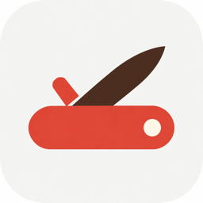
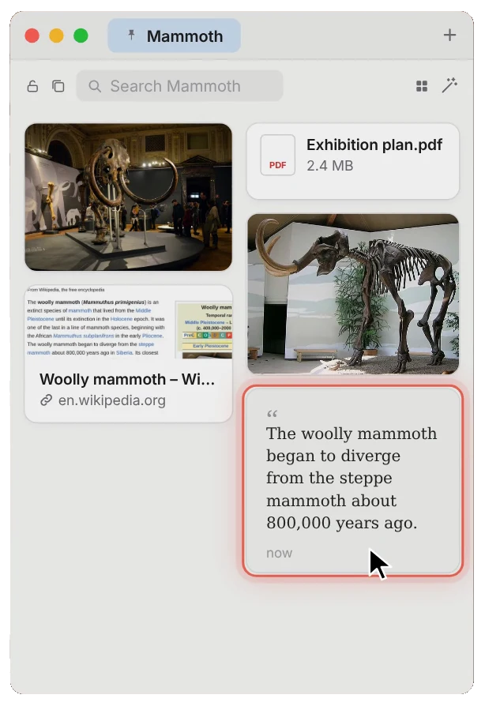
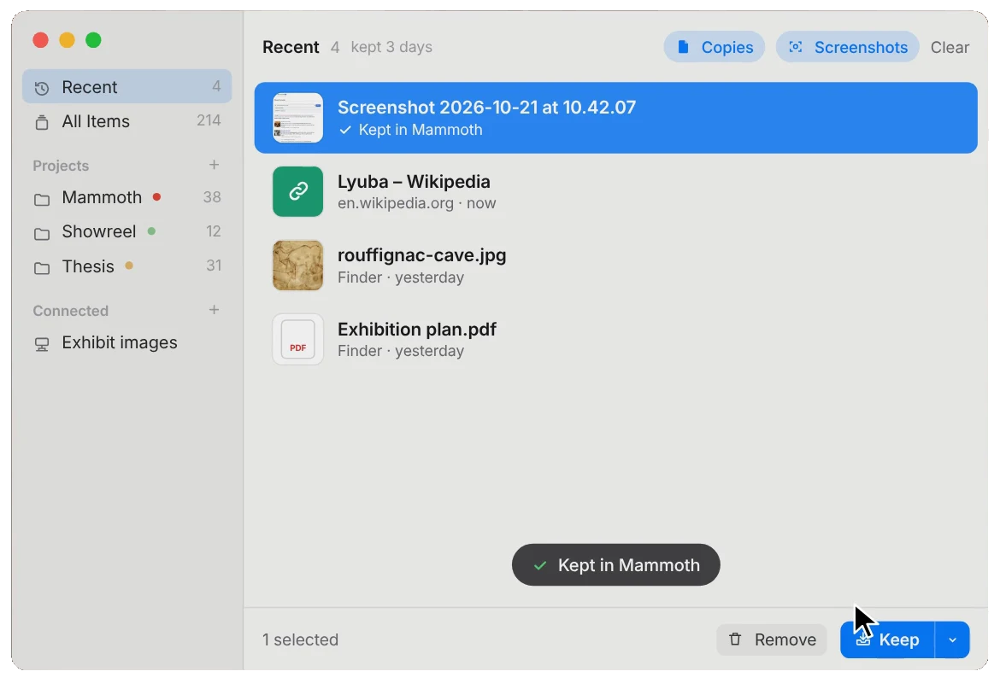
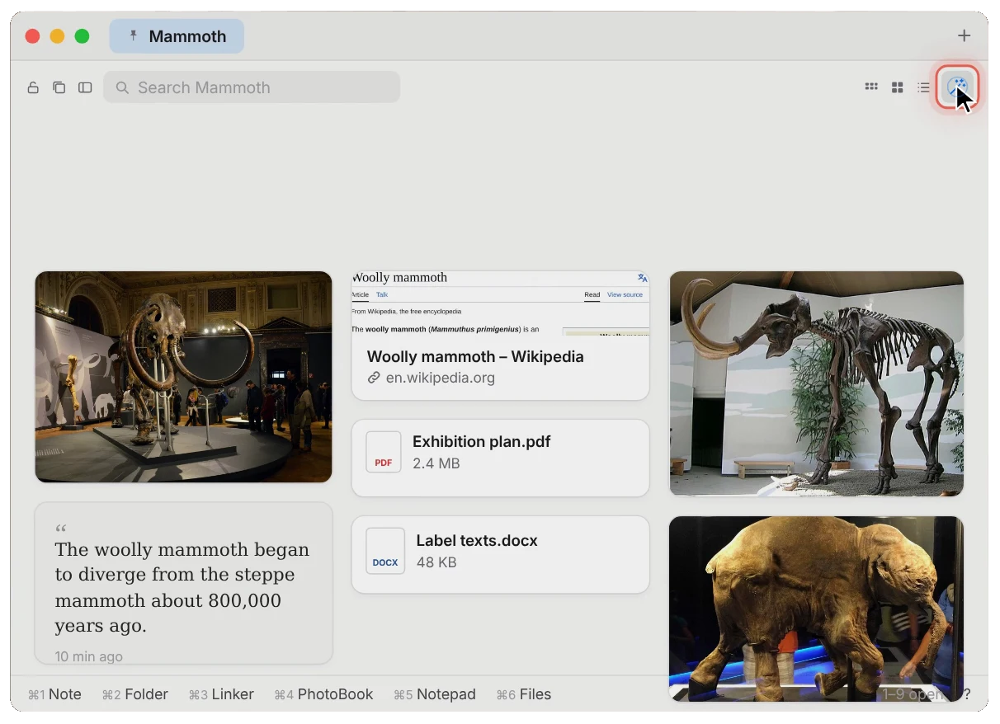
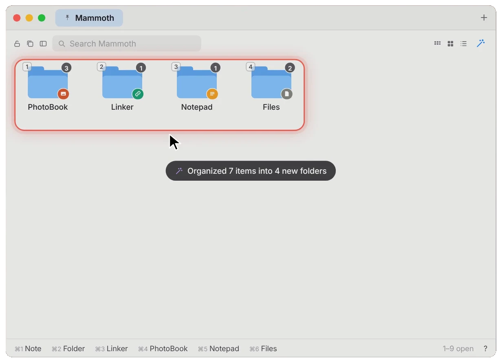
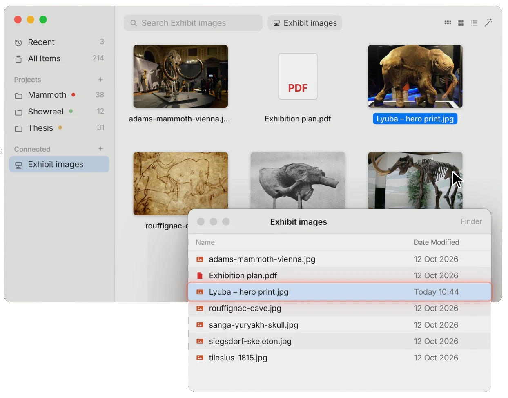
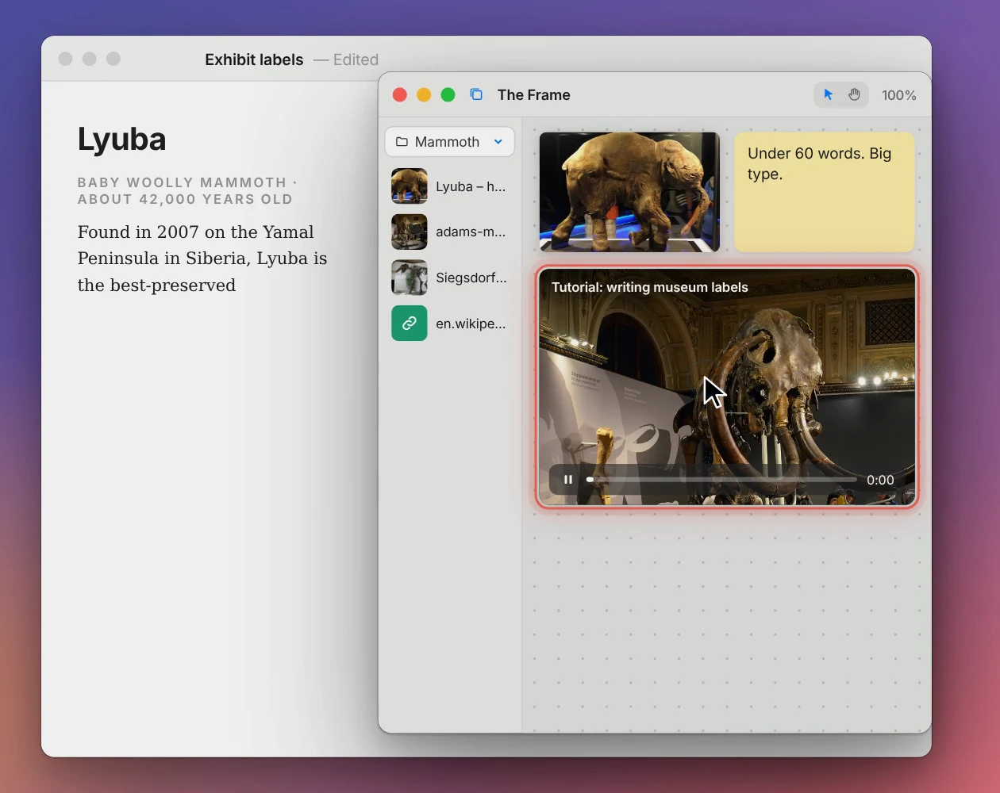
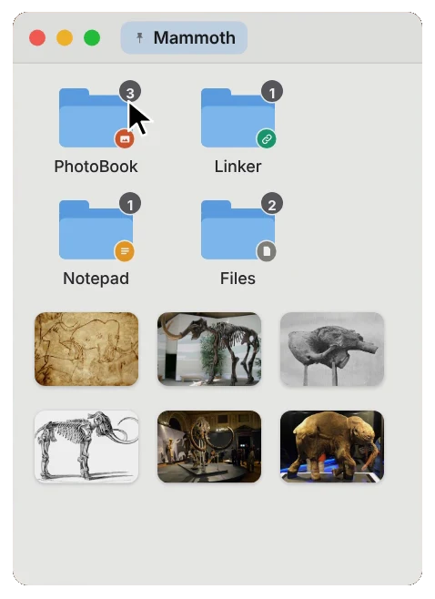
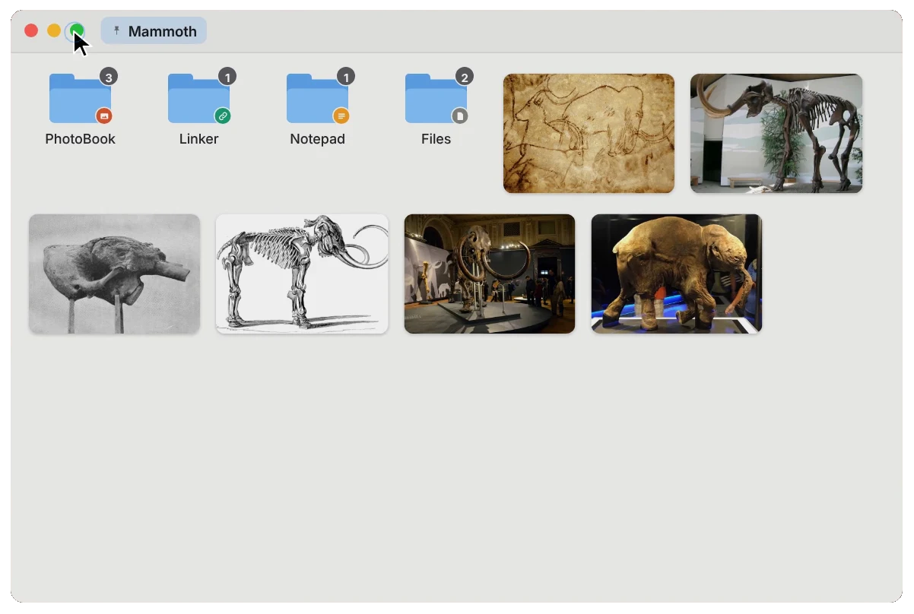
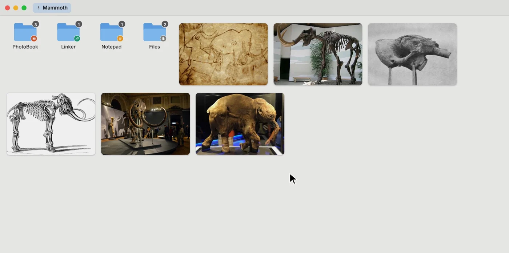

SwissA pocket knife for your ideas.
Keep links, pictures, files and notes close while you work. Swiss lives in your Mac's menu bar and opens with ⌥ Space.
The video couldn't load.
Found something worth keeping?
Drag it in from any app. Pictures, links, files and quotes land on your project's board, right where you left off.


Recent, if you want it. Turn on capture and what you copy and every screenshot waits in Recent for 3 days. It's off until you switch it on.
Never your passwords. Items apps mark as private are skipped, and password managers are left out.
Quick save, anywhere. Press ⌥⌘V in any app to save what you just copied.
A little order. In one click.
Every project is a tab. When the board gets busy, the magic wand puts each thing in a folder for its kind.


Folders made for each kind. Linker for links, PhotoBook for pictures, Notepad for notes and Files for the rest. Add tags, drag between folders, copy whole folders to another project.
Sorted by kind, not by guesswork. The wand looks at what something is, not what it's about. If those folders already exist, it asks before adding to them.
Your folders. A faster way in.
Connect any Finder folder and work in it like a project. Nothing is copied: Swiss works on the folder itself.

Changes are real. Rename, move, tag or delete in Swiss and the same happens in Finder.
Both ways. What you change in Finder shows up in Swiss.
Sorted your way. Arrange by name, kind, date or tags.
Keep your references beside your work.
The Frame is a canvas that floats above every app. Drag in pictures, notes and links, play a tutorial, and keep working underneath.

Drag stuff in. From your projects and Recent in the library beside the canvas, or from any app.
Watch while you work. YouTube links and video files play right on the canvas, above the app you're in.
Arrange freely. Zoom, pan and move things around. Made a mistake? ⌘Z.
Just the space you need.
Start small from the menu bar and step up when you need room. Green steps up a size, orange steps back down.



And the small blades.
Convert
Right-click ▸ Convert. Pictures to JPG, PNG, HEIC, TIFF, PDF or smaller. Videos to MP4, MOV, M4V, smaller or sound only. Documents to PDF. Videos and YouTube links to MP3 or MP4.
Share
AirDrop, Mail, Messages and WhatsApp, from a right-click.
Recover
Deleted things stay in Recently Deleted for 30 days. Saves are checked, with hourly backups.
Touch ID lock
Optional. Swiss locks again when your Mac locks or sleeps.
Big files stay put
Files over 250 MB are linked, not copied, so your library doesn't fill your disk.
Keys
- Open Swiss⌥ Space
- Save what you copied⌥⌘V
- Quick LookSpace
- Every key, listed?
Everything stays on your Mac.
No account. No servers. No analytics. Swiss only goes online for things you start, like fetching a saved link's title or playing a video.
Ordinary files. Your library is saved as real files in a hidden folder in Documents, so it takes disk space like any file, and syncs with iCloud only if your Documents folder does.
Off by default. Clipboard, screenshot and download capture start only when you turn them on.
Careful with files. Files that can run code ask before they open, and downloads are marked the way Safari marks them.
Get Swiss.
Version 1.0, for Macs with Apple silicon running macOS 14 Sonoma or later.
Checking GitHub for the latest release…
Swiss
- Open the download and drag Swiss into Applications.
- Open it from Applications. It appears in the menu bar with a short tour.
- Press ⌥ Space any time to open it.
Build it on your Mac.
Swiss isn't signed and notarized by Apple yet, so there's no download here for now. Its source is public, and it builds in a couple of minutes.
- Install Xcode from the App Store and open it once.
- In Terminal, get the source:
git clone https://github.com/yotamkiper1/Swiss.git cd Swiss - Build and install:
Swiss lands in Applications and opens. Look for the knife in the menu bar../build.sh install
- macOS
- 14 Sonoma or later
- Mac
- Apple silicon
- Intel Macs
- Not yet
Something not working? Email kipery20@gmail.com or use Help ▸ Report a Problem in Swiss.
Questions.
What can I keep in Swiss?
Links, pictures, files, notes and folders. Drop, paste or drag them in from any app. YouTube links and video files can also play on the Frame.
Does clipboard capture happen automatically?
No. Capture of the clipboard, screenshots and downloads is off until you turn it on (Settings ▸ Capture, or the switches at the top of Recent). Once it's on, new items wait in Recent for 3 days by default and you keep the ones you want. Passwords and items apps mark as private are never captured.
Where are my files stored?
On your Mac, as ordinary files in a hidden folder inside Documents (~/Documents/.Stash), so they use disk space like any other file. Very large files are linked instead of copied. If iCloud syncs your Documents folder, it syncs this folder too.
How do connected folders work?
Pick a folder in Finder and Swiss shows it in the sidebar. Renaming, moving, tagging and deleting in Swiss change the real folder, and changes made in Finder show up in Swiss. Nothing is copied.
Can I watch a tutorial while working?
Yes. Put a YouTube link or a video file on the Frame. It floats above your other apps, so the video stays in view while you work underneath.
Which Macs are supported?
Macs with Apple silicon running macOS 14 Sonoma or later. Intel Macs aren't supported yet.
How do I install Swiss?
Until a signed download is ready, you build it from the source with Xcode: the steps are in Get Swiss. When a release is published on GitHub, the download appears there by itself.
Do I need an account?
No. There's no sign-in and no server.
How do I report a problem or send an idea?
In Swiss, choose Help ▸ Report a Problem or Send Feedback. It opens an email you read and send yourself. Or write to kipery20@gmail.com.